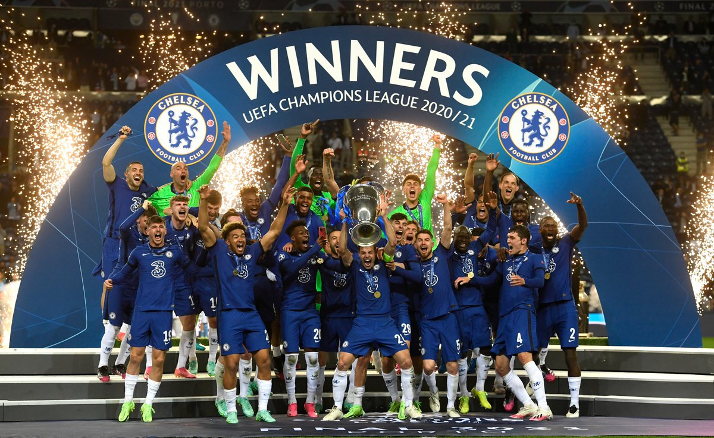

Chelsea Football Club is an English professional football club based in Fulham, West London. Founded in 1905, they play their home games at Stamford Bridge.[5] The club competes in the Premier League, the top division of English football. They won their first major honour, the League championship, in 1955. The club won the FA Cup for the first time in 1970, their first European honour, the Cup Winners' Cup, in 1971, and became the third English club to win the Club World Cup in 2022.
>Chelsea's recent accolades
Chelsea reached the FA Cup final, losing 1–0 to Leicester City, and won their second UEFA Champions League title with a 1–0 win over Manchester City in Porto.

Current Squad
Goalkeepers:
Edouard Mendy
Kepa Arrizabalaga
Jamal Blackman
Defenders:
César Azpilicueta
Antonio Rüdiger
Thiago Silva
Kurt Zouma
Andreas Christensen
Ben Chilwell
Marcos Alonso
Reece James
Midfielders:
Jorginho
Mateo Kovačić
N'Golo Kanté
Ross Barkley
Mason Mount
Callum Hudson-Odoi
Christian Pulisic
Hakim Ziyech
Saul Niguez
Forwards:
Timo Werner
Tammy Abraham
Olivier Giroud
Kai Havertz
Club History
Chelsea was founded in 1905 by businessman Gus Mears. The club's early years were characterized by financial struggles, but they managed to win their first major trophy, the Football League Championship, in 1955. In the 1960s, Chelsea became a major force in English football, winning the FA Cup in 1965 and the UEFA Cup Winners' Cup in 1971.
Chelsea's fortunes fluctuated in the following decades, with periods of success and failure. However, the arrival of Russian billionaire Roman Abramovich as the club's owner in 2003 changed the club's trajectory, as he invested heavily in the squad and infrastructure. Chelsea won their first Premier League title in 2005, and have since won four more. They have also won the FA Cup eight times, the League Cup five times, and the UEFA Champions League twice.
Stadium
Stamford Bridge has been Chelsea's home since the club's formation in 1905. The stadium has a capacity of just over 40,000, and has undergone several renovations and expansions over the years. In recent years, there have been discussions about building a new stadium to increase capacity and modernize the facilities, but no concrete plans have been announced yet.